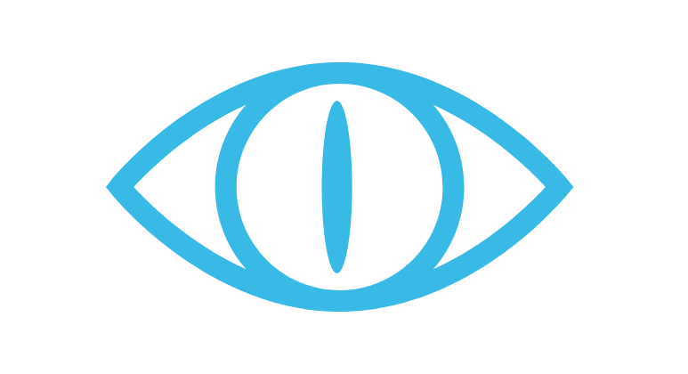

<mat-toolbar class="footer">
  
  <span class="footer-icons">
  <fa-icon class="footer-icon" [icon]="faDiscord" matTooltip="Discord" (click)="openDiscordUrl()"></fa-icon>
  <fa-icon class="footer-icon" [icon]="faTrello" matTooltip="Trello" (click)="openTrelloUrl()"></fa-icon>
  <fa-icon class="footer-icon" [icon]="faYoutube" matTooltip="Youtube" (click)="openYoutubeUrl()"></fa-icon>
</span>
</mat-toolbar>
